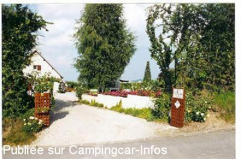

ASN = Aire de services avec stationnement nuit possible de :
CHAVOT COURCOURT
(N° 176)
Accès/adresse :
29 rue du Maréchal Juin
Champagne Lagache Lecourt
51530 CHAVOT COURCOURT
Champagne Lagache Lecourt
51530 CHAVOT COURCOURT
Latitude : (Nord) 49.0035° Décimaux ou 49° 0′ 12′′
Longitude : (Est) 3.93032° Décimaux ou 3° 55′ 49′′
Tarif : 2009
Stationnement, services : 18 €
Type de borne : Autre
Services :


Autres informations :
Ouvert toute l'année.
Aire Privée, réservation obligatoire.
Tel : +33 (0) 326 548 679

Le 11/05/2004 par duchateaum
de
Michel Duchateau
le 04/05/2004 :
Nous sommes resté deux nuit au mois de juin 2003. Accueil trés sympa, chez le vignoble. Jardin à l'anglaise trés joli. Le forfait nuit donne droit à une bouteille de Champ. Quelle bonne idée pour l'apèro... Pas de commerce à proximité,mais quelle calme! Vue sur Epernay et possibilité de promenade dans les vignes.
Nous sommes resté deux nuit au mois de juin 2003. Accueil trés sympa, chez le vignoble. Jardin à l'anglaise trés joli. Le forfait nuit donne droit à une bouteille de Champ. Quelle bonne idée pour l'apèro... Pas de commerce à proximité,mais quelle calme! Vue sur Epernay et possibilité de promenade dans les vignes.